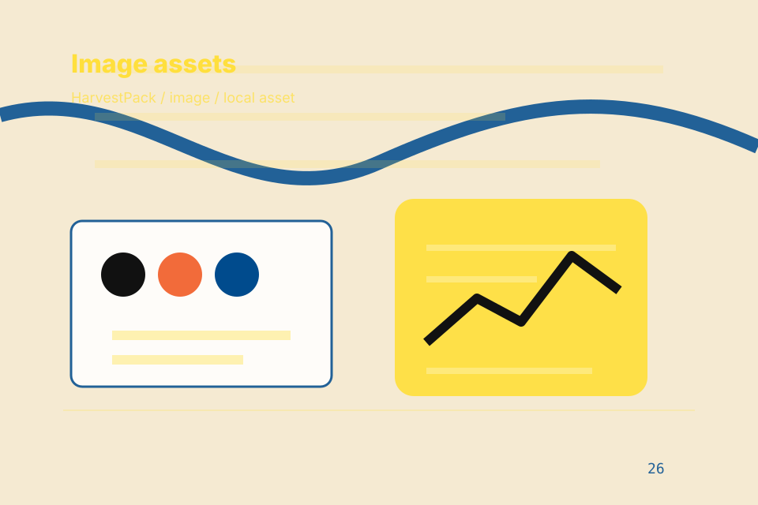

Home / 01
Grain
A packaged food site with bold copy, illustrated product cards, allergen filters, and stockist routes
Home opens as a clear food production decision hub: what Grain offers, who it helps, why it matters, and which route to take first.
The first screen combines positioning, proof, primary action, and fast internal navigation, so people can act immediately or compare the rest of the home route with context.
Browse quicklyCompare clearlyAsk availability
Packaging shelf hero
Check ingredients
Select the closest route and Grain keeps the next step, proof, and follow-up expectation aligned with quality, safety and taste.

Site atlas
Every route through Grain
This homepage is the working index for food production, packaged goods & consumer foods: it explains the offer, points to every deeper page, and keeps the final action visible without making the visitor hunt.
A packaged food site with bold copy, illustrated product cards, allergen filters, and stockist routes. The page links problem, promise, services, process, proof, questions, support, legal routes, and conversion paths into one clear decision map.
Brand
Open the brand route for origin, makers, mission so food production, packaged goods & consumer foods visitors can compare context, proof, and next steps.
Open BrandProducts
Open the products route for range, flavours, sizes so food production, packaged goods & consumer foods visitors can compare context, proof, and next steps.
Open ProductsQuality
Open the quality route for sourcing, production, testing so food production, packaged goods & consumer foods visitors can compare context, proof, and next steps.
Open QualityStory
Open the story route for heritage, inspiration, craft so food production, packaged goods & consumer foods visitors can compare context, proof, and next steps.
Open StoryStockists
Open the stockists route for retailers, regions, map so food production, packaged goods & consumer foods visitors can compare context, proof, and next steps.
Open StockistsRecipes
Open the recipes route for ideas, pairings, ingredients so food production, packaged goods & consumer foods visitors can compare context, proof, and next steps.
Open RecipesWholesale
Open the wholesale route for trade, distribution, bulk so food production, packaged goods & consumer foods visitors can compare context, proof, and next steps.
Open WholesaleQuestions
Open the questions route for ingredients, allergens, storage so food production, packaged goods & consumer foods visitors can compare context, proof, and next steps.
Open QuestionsContact
Open the contact route for retail, wholesale, press so food production, packaged goods & consumer foods visitors can compare context, proof, and next steps.
Open ContactAsset System
Review the local assets, icons, OG images, and static handoff materials used by Grain.
Open Asset SystemSitemap
Use the full sitemap to recover any route and verify the whole Grain structure.
Open SitemapPrivacy
Read the privacy route before sending personal details through the static form.
Open PrivacyCookies
Manage consent and understand the privacy-safe analytics approach.
Open CookiesHome / 02
Promise
Promise defines the better state Grain is built to create, with enough detail to make the promise believable.
A packaged food site with bold copy, illustrated product cards, allergen filters, and stockist routes. The section grounds that direction in concrete benefits, visible tradeoffs, and a next route visitors can use when the promise feels relevant.
Open BrandBetter State
Promise defines what becomes clearer, easier, or safer when Grain is the chosen route.
Practical Gain
The benefit is tied to quality, safety and taste, not a vague quality claim.
Proof Route
Visitors get a linked path to compare the promise against services, standards, or examples.
Home / 03
Taste
Taste adds commerce context to the home route, using the playful product manifesto structure to support quality, safety and taste before visitors choose a next step.
Grain uses chunky ingredient cards and focused copy to make the decision easier to scan, aligning the section with quality, safety and taste rather than filling space.
Open Products- 01
Context
Taste gives the page a specific angle instead of repeating the navigation label.
- 02
Judgment
The chunky ingredient cards show what to compare, what to avoid, and what matters most for food production, packaged goods & consumer foods visitors.
- 03
Direction
The final cue points to a useful internal route so the section keeps the journey moving.
Home / 04
Quality
Quality adds commerce context to the home route, using the playful product manifesto structure to support quality, safety and taste before visitors choose a next step.
Grain uses chunky ingredient cards and focused copy to make the decision easier to scan, aligning the section with quality, safety and taste rather than filling space.
Open QualityContext
Quality gives the page a specific angle instead of repeating the navigation label.
Judgment
The chunky ingredient cards show what to compare, what to avoid, and what matters most for food production, packaged goods & consumer foods visitors.
Direction
The final cue points to a useful internal route so the section keeps the journey moving.
Home / 05
Products
Products explains the practical scope, best-fit situations, and expected outcome so food production visitors can compare options without decoding jargon.
The section keeps the offer concrete: what is included, who it is best for, what decision it supports, and which linked route gives the deeper detail.
Open ProductsBest Fit
Who should use products and when it belongs in the home journey.
Packaging shelf hero
Check ingredients
Select the closest route and Grain keeps the next step, proof, and follow-up expectation aligned with quality, safety and taste.
Home / 06
Story
Story adds commerce context to the home route, using the playful product manifesto structure to support quality, safety and taste before visitors choose a next step.
Grain uses chunky ingredient cards and focused copy to make the decision easier to scan, aligning the section with quality, safety and taste rather than filling space.
Open StoryContext
Story gives the page a specific angle instead of repeating the navigation label.
Judgment
The chunky ingredient cards show what to compare, what to avoid, and what matters most for food production, packaged goods & consumer foods visitors.
Direction
The final cue points to a useful internal route so the section keeps the journey moving.
Home / 07
Stockists
Stockists adds commerce context to the home route, using the playful product manifesto structure to support quality, safety and taste before visitors choose a next step.
Grain uses chunky ingredient cards and focused copy to make the decision easier to scan, aligning the section with quality, safety and taste rather than filling space.
Open Recipes- 01
Context
Stockists gives the page a specific angle instead of repeating the navigation label.
- 02
Judgment
The chunky ingredient cards show what to compare, what to avoid, and what matters most for food production, packaged goods & consumer foods visitors.
- 03
Direction
The final cue points to a useful internal route so the section keeps the journey moving.
Home / 08
Reviews
Reviews converts customer proof into a useful buying signal: the problem, the experience, and what changed afterward.
Proof stays believable by focusing on situation, service experience, and practical change rather than vague praise or unsupported results.
Open WholesaleGrain structures reviews around situation, experience, and a clear next route so visitors can compare the block quickly before they request trade information.
Request Trade InfoHome / 09
Questions
Questions handles buying doubts directly so visitors can understand timing, fit, limits, and the safest next step.
Answers are short by design: enough to remove hesitation, not so much that the page turns into documentation before the visitor can act.
Open ContactQuestion
Questions gives the page a specific angle instead of repeating the navigation label.
Answer
The chunky ingredient cards show what to compare, what to avoid, and what matters most for food production, packaged goods & consumer foods visitors.
Next Step
The final cue points to a useful internal route so the section keeps the journey moving.
What happens first?
Grain starts with a focused intake so the recommendation matches the visitor's context, risk, timing, and readiness.
How is scope kept clear?
Each route explains inclusions, exclusions, documents, timing, and the decision points that affect final delivery.
How is this site different?
The theme uses playful product manifesto, chunky ingredient cards, and product/allergen filter, stockist finder, recipe tabs rather than a shared template rhythm.
Packaging shelf hero
Check ingredients
Select the closest route and Grain keeps the next step, proof, and follow-up expectation aligned with quality, safety and taste.
Notes
Ingredient, allergen, and storage information must match the final product label and local requirements.
Home / 10
Request Trade Info
Grain closes the home route with a clear action, a quick reminder of the value, and a low-friction way to request trade information.
Visitors who are ready can use the primary action. Visitors who are still comparing can scan the section links, proof, and support routes before they request trade information.
Request Trade InfoThe final block keeps the choice simple: act now, compare one more proof route, or send enough detail for a focused response.
Request Trade Infoquality, safety and taste
Request Trade Info
A packaged food site with bold copy, illustrated product cards, allergen filters, and stockist routes. Home ends with a direct path to request trade information, plus enough context for visitors who still need to compare.